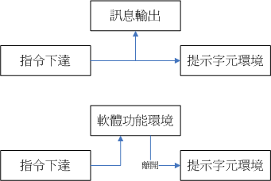

4.2 文字模式下指令的下达
其实我们都是通过“程序”在跟系统作沟通的，本章上面提到的窗口管理员或文字模式都是一组或一只程序在负责我们所想要完成的任务。 文字模式登陆后所取得的程序被称为壳（Shell），这是因为这支程序负责最外面跟使用者（我们）沟通，所以才被戏称为壳程序！ 更多与操作系统及壳程序的相关性可以参考第零章、计算机概论内的说明。
我们Linux的壳程序就是厉害的bash这一支！关于更多的bash我们在第三篇再来介绍。现在让我们来练一练打字吧！

Tips “练打字”真的是开玩笑的！各位观众朋友，千万不要只是“观众朋友”而已，您得要自己亲身体验，看看指令下达之后所输出的信息， 并且理解一下“我敲这个指令的目的是想要完成什么任务？”，再看看输出的结果是否符合你的需求，这样才能学到东西！不是单纯的鸟哥写什么， 你就打什么，那只是“练打字”不是“学Linux”喔！ ^_^
4.2.1 开始下达指令
其实整个指令下达的方式很简单，你只要记得几个重要的概念就可以了。举例来说，你可以这样下达指令的：
[dmtsai@study ~]$ command [-options] parameter1 parameter2 ...
指令 选项 参数（1） 参数（2）
上述指令详细说明如下：
- 一行指令中第一个输入的部分绝对是“指令（command）”或“可可执行文件案（例如批次脚本,script）”
- command 为指令的名称，例如变换工作目录的指令为 cd 等等；
- 中刮号[]并不存在于实际的指令中，而加入选项设置时，通常选项前会带 - 号，例如 -h；有时候会使用选项的完整全名，则选项前带有 -- 符号，例如 --help；
- parameter1 parameter2.. 为依附在选项后面的参数，或者是 command 的参数；
- 指令, 选项, 参数等这几个咚咚中间以空格来区分，不论空几格 shell 都视为一格。所以空格是很重要的特殊字符！；
- 按下[Enter]按键后，该指令就立即执行。[Enter]按键代表着一行指令的开始启动。
- 指令太长的时候，可以使用反斜线 （\） 来跳脱[Enter]符号，使指令连续到下一行。注意！反斜线后就立刻接特殊字符，才能跳脱！
- 其他：
- 在 Linux 系统中，英文大小写字母是不一样的。举例来说， cd 与 CD 并不同。
- 更多的介绍等到第十章 bash 时，再来详述。
注意到上面的说明当中，“第一个被输入的数据绝对是指令或者是可执行的文件”！ 这个是很重要的概念喔！还有，按下[Enter]键表示要开始执行此一命令的意思。我们来实际操作一下： 以ls这个“指令”列出“自己主文件夹（~）”下的“所有隐藏文件与相关的文件属性”， 要达成上述的要求需要加入 -al 这样的选项，所以：
[dmtsai@study ~]$ ls -al ~
[dmtsai@study ~]$ ls -al ~
[dmtsai@study ~]$ ls -a -l ~
上面这三个指令的下达方式是一模一样的执行结果喔！为什么？请参考上面的说明吧！ 关于更详细的文字模式使用方式，我们会在第十章认识BASH再来强调喔！ 此外，请特别留意，在Linux的环境中， “大小写字母是不一样的东西！”也就是说，在Linux下面， VBird与vbird这两个文件是“完全不一样的”文件呢！所以， 你在下达指令的时候千万要注意到指令是大写还是小写。例如当输入下面这个指令的时候，看看有什么现象：
[dmtsai@study ~]$ date <==结果显示日期与时间
[dmtsai@study ~]$ Date <==结果显示找不到指令
[dmtsai@study ~]$ DATE <==结果显示找不到指令
很好玩吧！只是改变小写成为大写而已，该指令就变的不存在了！ 因此，请千万记得这个状态呦！
- 语系的支持
另外，很多时候你会发现，咦！怎么我输入指令之后显示的结果的是乱码？ 这跟鸟哥说的不一样啊！呵呵！不要紧张～我们前面提到过，Linux是可以支持多国语系的，若可能的话， 屏幕的讯息是会以该支持语系来输出的。但是，我们的终端机接口（terminal）在默认的情况下， 无法支持以中文编码输出数据的。这个时候，我们就得将支持语系改为英文，才能够以英文显示出正确的讯息。 那怎么做呢？你可以这样做：
1\. 显示目前所支持的语系
[dmtsai@study ~]$ locale
LANG=zh_TW.utf8 # 语言语系的输出
LC_CTYPE="zh_TW.utf8" # 下面为许多信息的输出使用的特别语系
LC_NUMERIC=zh_TW.UTF-8
LC_TIME=zh_TW.UTF-8 # 时间方面的语系数据
LC_COLLATE="zh_TW.utf8"
....中间省略....
LC_ALL= # 全部的数据同步更新的设置值
# 上面的意思是说，目前的语系（LANG）为zh_TW.UTF-8，亦即台湾繁体中文的万国码
[dmtsai@study ~]$ date
鈭? 5??29 14:24:36 CST 2015 # 纯命令行下，无法显示中文字，所以前面是乱码
2\. 修改语系成为英文语系
[dmtsai@study ~]$ LANG=en_US.utf8
[dmtsai@study ~]$ export LC_ALL=en_US.utf8
# LANG 只与输出讯息有关，若需要更改其他不同的信息，要同步更新 LC_ALL 才行！
[dmtsai@study ~]$ date
Fri May 29 14:26:45 CST 2015 # 顺利显示出正确的英文日期时间啊！
[dmtsai@study ~]$ locale
LANG=en_US.utf8
LC_CTYPE="en_US.utf8"
LC_NUMERIC="en_US.utf8"
....中间省略....
LC_ALL=en_US.utf8
# 再次确认一下，结果出现，确实是en_US.utf8这个英文语系！
注意一下，那个“LANG=enUS.utf8”是连续输入的，等号两边并没有空白字符喔！ 这样一来，就能够在“这次的登陆”察看英文讯息啰！为什么说是“这次的登陆”呢？ 因为，如果你登出Linux后，刚刚下达的指令就没有用啦！ ^^，这个我们会在第十章再好好聊一聊的！好啰，下面我们来练习一下一些简单的指令， 好让你可以了解指令下达方式的模式：
4.2.2 基础指令的操作
下面我们立刻来操作几个简单的指令看看啰！同时请注意，我们已经使用了英文语系作为默认输出的语言喔！
- 显示日期与时间的指令： date
- 显示日历的指令： cal
简单好用的计算机： bc
1. 显示日期的指令： date
如果在命令行中想要知道目前Linux系统的时间，那么就直接在命令行界面输入date即可显示：
[dmtsai@study ~]$ date
Fri May 29 14:32:01 CST 2015
上面显示的是：星期五, 五月二十九日, 14:32 分, 01秒，在 2015 年的 CST 时区！台湾在CST时区中啦！ 请赶快动手做做看呦！好了，那么如果我想要让这个程序显示出“2015/05/29”这样的日期显示方式呢？ 那么就使用date的格式化输出功能吧！
[dmtsai@study ~]$ date +%Y/%m/%d
2015/05/29
[dmtsai@study ~]$ date +%H:%M
14:33
那个“+%Y%m%d”就是date指令的一些参数功能啦！很好玩吧！那你问我， 鸟哥怎么知道这些参数的啊？要背起来吗？当然不必啦！下面再告诉你怎么查这些参数啰！
从上面的例子当中我们也可以知道，指令之后的选项除了前面带有减号“-”之外，某些特殊情况下， 选项或参数前面也会带有正号“+”的情况！这部份可不要轻易的忘记了呢！
- 2. 显示日历的指令： cal
那如果我想要列出目前这个月份的月历呢？呵呵！直接给他下达cal即可！
[dmtsai@study ~]$ cal
May 2015
Su Mo Tu We Th Fr Sa
1 2
3 4 5 6 7 8 9
10 11 12 13 14 15 16
17 18 19 20 21 22 23
24 25 26 27 28 29 30
31
除了本月的日历之外，连同今日所在日期处都会有反白的显示呢！真有趣！cal （calendar）这个指令可以做的事情还很多，例如你可以显示整年的月历情况：
[dmtsai@study ~]$ cal 2015
2015
January February March
Su Mo Tu We Th Fr Sa Su Mo Tu We Th Fr Sa Su Mo Tu We Th Fr Sa
1 2 3 1 2 3 4 5 6 7 1 2 3 4 5 6 7
4 5 6 7 8 9 10 8 9 10 11 12 13 14 8 9 10 11 12 13 14
11 12 13 14 15 16 17 15 16 17 18 19 20 21 15 16 17 18 19 20 21
18 19 20 21 22 23 24 22 23 24 25 26 27 28 22 23 24 25 26 27 28
25 26 27 28 29 30 31 29 30 31
April May June
Su Mo Tu We Th Fr Sa Su Mo Tu We Th Fr Sa Su Mo Tu We Th Fr Sa
1 2 3 4 1 2 1 2 3 4 5 6
5 6 7 8 9 10 11 3 4 5 6 7 8 9 7 8 9 10 11 12 13
12 13 14 15 16 17 18 10 11 12 13 14 15 16 14 15 16 17 18 19 20
19 20 21 22 23 24 25 17 18 19 20 21 22 23 21 22 23 24 25 26 27
26 27 28 29 30 24 25 26 27 28 29 30 28 29 30
31
....（以下省略）....
基本上cal这个指令可以接的语法为：
[dmtsai@study ~]$ cal [month] [year]
所以，如果我想要知道2015年10月的月历，可以直接下达：
[dmtsai@study ~]$ cal 10 2015
October 2015
Su Mo Tu We Th Fr Sa
1 2 3
4 5 6 7 8 9 10
11 12 13 14 15 16 17
18 19 20 21 22 23 24
25 26 27 28 29 30 31
那请问今年有没有13月啊？来测试一下这个指令的正确性吧！下达下列指令看看：
[dmtsai@study ~]$ cal 13 2015
cal: illegal month value: use 1-12
cal竟然会告诉我们“错误的月份，请使用1-12”这样的信息呢！所以， 未来你可以很轻易的就以cal来取得日历上面的日期啰！简直就是万年历啦！ ^_^。 另外，由这个cal指令的练习我们也可以知道，某些指令有特殊的参数存在， 若输入错误的参数，则该指令会有错误讯息的提示，通过这个提示我们可以借以了解指令下达错误之处。 这个练习的结果请牢记在心中喔！
- 3. 简单好用的计算机： bc
如果在文字模式当中，突然想要作一些简单的加减乘除，偏偏手边又没有计算机！这个时候要笔算吗？ 不需要啦！我们的Linux有提供一支计算程序，那就是bc喔。你在命令行输入bc后，屏幕会显示出版本信息， 之后就进入到等待指示的阶段。如下所示：
[dmtsai@study ~]$ bc
bc 1.06.95
Copyright 1991-1994, 1997, 1998, 2000, 2004, 2006 Free Software Foundation, Inc.
This is free software with ABSOLUTELY NO WARRANTY.
For details type `warranty'.
_ <==这个时候，光标会停留在这里等待你的输入
事实上，我们是“进入到bc这个软件的工作环境当中”了！ 就好像我们在Windows里面使用“小算盘”一样！所以，我们下面尝试输入的数据， 都是在bc程序当中在进行运算的动作。所以啰，你输入的数据当然就得要符合bc的要求才行！ 在基本的bc计算机操作之前，先告知几个使用的运算子好了：
- 加法
- 减法
- 乘法
- / 除法
- ^ 指数
- % 余数
好！让我们来使用bc计算一些咚咚吧！
[dmtsai@study ~]$ bc
bc 1.06.95
Copyright 1991-1994, 1997, 1998, 2000, 2004, 2006 Free Software Foundation, Inc.
This is free software with ABSOLUTELY NO WARRANTY.
For details type `warranty'.
1+2+3+4 <==只有加法时
10
7-8+3
2
10*52
520
10%3 <==计算“余数”
1
10^2
100
10/100 <==这个最奇怪！不是应该是 0.1 吗？
0
quit <==离开 bc 这个计算器
在上表当中，粗体字表示输入的数据，而在每个粗体字的下面就是输出的结果。 咦！每个计算都还算正确，怎么10/100会变成0呢？这是因为bc默认仅输出整数，如果要输出小数点下位数，那么就必须要执行 scale=number ，那个number就是小数点位数，例如：
[dmtsai@study ~]$ bc
bc 1.06.95
Copyright 1991-1994, 1997, 1998, 2000, 2004, 2006 Free Software Foundation, Inc.
This is free software with ABSOLUTELY NO WARRANTY.
For details type `warranty'.
scale=3 <==没错！就是这里！！
1/3
.333
340/2349
.144
quit
注意啊！要离开bc回到命令提示字符时，务必要输入“quit”来离开bc的软件环境喔！ 好了！就是这样子啦！简单的很吧！以后你可以轻轻松松的进行加减乘除啦！
从上面的练习我们大概可以知道在命令行界面里面下达指令时，会有两种主要的情况：
- 一种是该指令会直接显示结果然后回到命令提示字符等待下一个指令的输入；
- 一种是进入到该指令的环境，直到结束该指令才回到命令提示字符的环境。
我们以一个简单的图示来说明：
图4.2.1、指令下达的环境，上图为直接显示结果，下图为进入软件功能
如图4.2.1所示，上方指令下达后立即显示讯息且立刻回到命令提示字符的环境。 如果有进入软件功能的环境（例如上面的bc软件），那么就得要使用该软件的结束指令 （例如在bc环境中输入quit）才能够回到命令提示字符中！那你怎么知道你是否在命令提示字符的环境呢？ 很简单！你只要看到光标是在“[dmtsai@study ~]$ ”这种提示字符后面， 那就是等待输入指令的环境了。很容易判断吧！不过初学者还是很容易忘记啦！
4.2.3 重要的几个热键[Tab], [ctrl]-c, [ctrl]-d
在继续后面章节的学习之前，这里很需要跟大家再来报告一件事，那就是我们的文字模式里头具有很多的功能组合键， 这些按键可以辅助我们进行指令的编写与程序的中断呢！这几个按键请大家务必要记住的！很重要喔！
- [Tab]按键
[Tab]按键就是在键盘的大写灯切换按键（[Caps Lock]）上面的那个按键！在各种Unix-Like的Shell当中， 这个[Tab]按键算是Linux的Bash shell最棒的功能之一了！他具有“命令补全”与“文件补齐”的功能喔！ 重点是，可以避免我们打错指令或文件名称呢！很棒吧！但是[Tab]按键在不同的地方输入，会有不一样的结果喔！ 我们举下面的例子来说明。上一小节我们不是提到 cal 这个指令吗？如果我在命令行输入 ca 再按两次 [tab] 按键， 会出现什么讯息？
[dmtsai@study ~]$ ca[tab][tab] <==[tab]按键是紧接在 a 字母后面！
cacertdir_rehash cairo-sphinx cancel case
cache_check cal cancel.cups cat
cache_dump calibrate_ppa capsh catchsegv
cache_metadata_size caller captoinfo catman
# 上面的 [tab] 指的是“按下那个tab键”，不是要你输入中括号内的tab啦！
发现什么事？所有以ca为开头的指令都被显示出来啦！很不错吧！那如果你输入“ls -al ~/.bash”再加两个[tab]会出现什么？
[dmtsai@study ~]$ ls -al ~/.bash[tab][tab]
.bash_history .bash_logout .bash_profile .bashrc
咦！在该目录下面所有以 .bash 为开头的文件名称都会被显示出来了呢！注意看上面两个例子喔， 我们按[tab]按键的地方如果是在command（第一个输入的数据）后面时，他就代表着 “命令补全”，如果是接在第二个字以后的，就会变成“文件补齐”的功能了！但是在某些特殊的指令下面，文件补齐的功能可能会变成“参数/选项补齐”喔！ 我们同样使用 date 这个指令来查一下：
[dmtsai@study ~]$ date --[tab][tab] <==[tab]按键是紧接在 -- 后面！
--date --help --reference= --rfc-3339= --universal
--date= --iso-8601 --rfc-2822 --set= --version
# 瞧！系统会列出来 date 这个指令可以使用的选项有哪些喔～包括未来会用到的 --date 等项目
总结一下：
- [Tab] 接在一串指令的第一个字的后面，则为“命令补全”；
- [Tab] 接在一串指令的第二个字以后时，则为“文件补齐”！
- 若安装 bash-completion 软件，则在某些指令后面使用 [tab] 按键时，可以进行“选项/参数的补齐”功能！
善用 [tab] 按键真的是个很好的习惯！可以让你避免掉很多输入错误的机会！
Tips 在这一版的 CentOS 7.x 当中，由于多了一个名为 bash_completion 的软件，这个软件会主动的去侦测“各个指令可以下达的选项与参数”等行为， 因此，那个“文件补齐”的功能可能会变成“选项、参数补齐”的功能，不一定会主动补齐文件名了喔！这点得要特别留意。鸟哥第一次接触 CentOS 7 的时候， 曾经为了无法补齐文件名而觉得奇怪！烦恼了老半天说！
- [Ctrl]-c 按键
如果你在Linux下面输入了错误的指令或参数，有的时候这个指令或程序会在系统下面“跑不停”这个时候怎么办？别担心， 如果你想让当前的程序“停掉”的话，可以输入：[Ctrl]与c按键（先按着[Ctrl]不放，且再按下c按键，是组合按键）， 那就是中断目前程序的按键啦！举例来说，如果你输入了“find /”这个指令时，系统会开始跑一些东西（先不要理会这个指令串的意义），此时你给他按下 [Ctrl]-c 组合按键，嘿嘿！是否立刻发现这个指令串被终止了！就是这样的意思啦！
[dmtsai@study ~]$ find /
....（一堆东西都省略）....
# 此时屏幕会很花，你看不到命令提示字符的！直接按下[ctrl]-c即可！
[dmtsai@study ~]$ <==此时提示字符就会回来了！find程序就被中断！
不过你应该要注意的是，这个组合键是可以将正在运行中的指令中断的， 如果你正在运行比较重要的指令，可别急着使用这个组合按键喔！ ^_^
- [Ctrl]-d 按键
那么[Ctrl]-d是什么呢？就是[Ctrl]与d按键的组合啊！这个组合按键通常代表着： “键盘输入结束（End Of File, EOF 或 End Of Input）”的意思！ 另外，他也可以用来取代exit的输入呢！例如你想要直接离开命令行，可以直接按下[Ctrl]-d就能够直接离开了（相当于输入exit啊！）。
- [shift]+{[PageUP]|[Page Down]}按键
如果你在纯文本的画面中执行某些指令，这个指令的输出讯息相当长啊！所以导致前面的部份已经不在目前的屏幕画面中， 所以你想要回头去瞧一瞧输出的讯息，那怎办？其实，你可以使用 [Shift]+[Page Up] 来往前翻页，也能够使用 [Shift]+[Page Down] 来往后翻页！ 这两个组合键也是可以稍微记忆一下，在你要稍微往前翻画面时，相当有帮助！
Tips 因为目前学生比较常用图形界面的终端机系统，所以当鸟哥谈到 [Shift]+[Page UP] 的功能时，他们很不能理解耶！说都有鼠标磙轮了， 要这组合钮干麻？唉～真是没见过世面的小朋友...
总之，在Linux下面，命令行的功能是很强悍的！要多多的学习他，而要学习他的基础要诀就是...多使用、多熟悉啦！
4.2.4 错误讯息的察看
万一我下达了错误的指令怎么办？不要紧呀！你可以借由屏幕上面显示的错误讯息来了解你的问题点， 那就很容易知道如何改善这个错误讯息啰！举个例子来说，假如想执行date却因为大小写打错成为DATE时， 这个错误的讯息是这样显示的：
[dmtsai@study ~]$ DATE
bash: DATE: command not found... # 这里显示错误的讯息
Similar command is: 'date' # 这里竟然给你一个可能的解决方案耶！
上面那个bash:表示的是我们的Shell的名称， 本小节一开始就谈到过Linux的默认壳程序就是bash啰！ 那么上面的例子说明了bash有错误，什么错误呢？bash告诉你：
DATE: command not found
字面上的意思是说“指令找不到”，那个指令呢？就是DATE这个指令啦！ 所以说，系统上面可能并没有DATE这个指令啰！就是这么简单！通常出现“command not found”的可能原因为：
- 这个指令不存在，因为该软件没有安装之故。解决方法就是安装该软件；
- 这个指令所在的目录目前的用户并没有将他加入指令搜寻路径中，请参考第十章bash的PATH说明；
- 很简单！因为你打错字！
从 CentOS 7 开始，bash 竟然会尝试帮我们找解答耶！看一下上面输出的第二行“Similar command is: 'date'”，他说，相似的指令是 date 喔！ 没错啊！我们就是输入错误的大小写而已～这就已经帮我们找到答案了！看了输出，你也应该知道如何解决问题了吧？
介绍这几个指令让你玩一玩先，更详细的指令操作方法我们会在第三篇的时候再进行介绍！ 现在让我们来想一想，万一我在操作date这个指令的时候，手边又没有这本书，我要怎么知道要如何加那些奇怪的参数， 好让输出的结果符合我想要的输出格式呢？嘿嘿！到下一节鸟哥来告诉你怎么办吧！